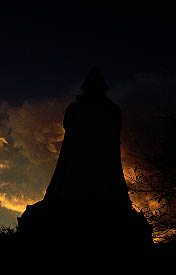
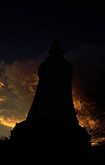

船岡観音/宮城県柴田町
東北本線の船岡駅から見える小高い山、船岡城趾公園。
その山の上に建っているのが船岡観音である。
高さは24メートル。巨大観音とまではいかないが、大観音としてのレベルはクリアーしているといえるだろう。
諸々の都合で船岡駅に着いたのが夕方、日没まであとわずかという時間帯だった。タクシーに乗り、山頂を目指す。
「あの〜、山の上の観音様のところまで行って下さい」
「あ、まだ開いてるかな。あそこ、夕方ンなると閉めちゃうんですよお」
ゲッ。
「それと観音様までは車で行けませんよ。下からケーブルカーに乗ってもらいます。でも、ケーブルカーももう終わっちゃったんじゃないかなあ・・・あ、終わっちゃってるみたいね。じゃ、こっから歩いていって。急いだ方がいいかもよ〜」
鋪装道ではあるが結構な勾配の坂道を走って登った・・・ヒ〜疲れた〜
その時、後ろの方からングァ〜という音が近付いてくる。
・・・ケーブルカーじゃん、走ってんじゃん。タクシーの運ちゃん、頼むよ〜
物凄く遅いケーブルカーだが歩くよりは確実に早く、私の横を通り過ぎていく。あれ最終便なんだろうな・・・
でも、観音様のためにわざわざケーブルカー曵くなんて凄い気合いの入れようだ。
と言う訳で、やっと山頂に着く。周辺は遊具やちびっ子迷路など子供用の施設と大観音だけである。寺がある訳では無い。
 日没寸前である。急ごう。
観音像は内部に入る事ができる。幸いまだ開いている。早速中に入ってみる。
身長24メートルという高さが示す通り、内部は相当狭い。恐らくこのサイズが多層の胎内巡りができる大観音の最小サイズではないだろうか。以前訪れた台湾は基隆の大観音（22.5メートル）も狭かったがこちらの狭さも相当である。一階は台座部分なのでまだスペースに余裕があり祭壇のようなものもあるが、2階から最上階までは延々と単螺旋階段が続く、というか螺旋階段以外何も無い空間が続く。一応螺旋階段でひと回りすると床のようなものがあるがそこには人が立てる程のスペースは無く、2階、３階と区分する意味もあまり感じられないのだが一応8層まであった。
で、最上階。観音像の喉元と反対側の肩口の辺りに丸窓が設けられている。東向きの窓からは船岡の市街が見おろせる。ただでさえ山の上に建っているので良い眺めだ。で、ガムテープで補修された後ろの西向きの窓からは今、まさに山あいに日が沈もうとしている。おお、なんとすんばらしい日没じゃ〜。
階段を降りて外に出る。
ふと横を見ると大観音建造者の胸像が。地元船岡出身の野口氏である。
碑文によるとこのお方、世界平和、国家安泰、郷土繁栄の為にこの観音様を建てたそうな。建立は昭和50年。時代的には第一次大観音ブームの時期（昭和30年代後半〜昭和50年頃、この頃大観音が全国で数多く建立されている。ちなみに第ニ次大観音ブームはバブル期である昭和60年代〜平成初期）と言って良いだろう。
ここの大観音の特徴は何といっても公園内にあるという事だ。しかも城跡にである。これは船岡観音が公園の遊具の一部である・・・という事ではなくて（地元の子供達にしてみれば遊具以外の何ものでも無いが）、いわゆる宗教施設である大観音像というものが寺を飛び出してひとつの公共性を得たという事なのではないだろうか。
そもそも戦前の大仏、大観音が皇太子成婚記念（聚楽園大仏）だったり天皇謁見記念（高崎観音）だったりと皇室絡みの理由に拠って建てられたものだったのが戦後になると世界平和の為という抽象的なものに変容していく。これは大観音の本質的な部分と関係ないところで「なぜ大観音を建てるのか？」という一般的な問いに対しての合理的な理由を「捏造」しなければならなかったからではないだろうか。
つまり、本心は自己顕示だったり金儲けだったり、また単なる大仏好きだったりするのだがそんな個人的な事情で建てるにはあまりにも社会的影響が強すぎる。だから戦前だったら皇室、戦後だったら世界平和という「誰も反対できない」まっとうな理由が欲しかったのだろう。
特に船岡観音の場合、いくら地元出身の名士といえど公共の公園内に建てる訳だから「誰も反対できない」理由は必要不可欠だったに違い無い。
大観音というものはいつも社会にさらされて生きていかなくてはならず、そのためには、その時代の「正義」を装わなくてはならないという悲しい宿命を持っているのだ。
あ、でも考えてみたらここの山自体がもともと建造者の所有地だったという事も考えられるか。
想像ばっかですみませんねえ。暗くなっちゃって誰もいないもんで話も聞けなかったんです。

夕日を背に山の上に建つ大観音。フツーの人には無気味だったり鬱陶しかったりするかも知れないけれど、オレは好きだね。
日没寸前である。急ごう。
観音像は内部に入る事ができる。幸いまだ開いている。早速中に入ってみる。
身長24メートルという高さが示す通り、内部は相当狭い。恐らくこのサイズが多層の胎内巡りができる大観音の最小サイズではないだろうか。以前訪れた台湾は基隆の大観音（22.5メートル）も狭かったがこちらの狭さも相当である。一階は台座部分なのでまだスペースに余裕があり祭壇のようなものもあるが、2階から最上階までは延々と単螺旋階段が続く、というか螺旋階段以外何も無い空間が続く。一応螺旋階段でひと回りすると床のようなものがあるがそこには人が立てる程のスペースは無く、2階、３階と区分する意味もあまり感じられないのだが一応8層まであった。
で、最上階。観音像の喉元と反対側の肩口の辺りに丸窓が設けられている。東向きの窓からは船岡の市街が見おろせる。ただでさえ山の上に建っているので良い眺めだ。で、ガムテープで補修された後ろの西向きの窓からは今、まさに山あいに日が沈もうとしている。おお、なんとすんばらしい日没じゃ〜。
階段を降りて外に出る。
ふと横を見ると大観音建造者の胸像が。地元船岡出身の野口氏である。
碑文によるとこのお方、世界平和、国家安泰、郷土繁栄の為にこの観音様を建てたそうな。建立は昭和50年。時代的には第一次大観音ブームの時期（昭和30年代後半〜昭和50年頃、この頃大観音が全国で数多く建立されている。ちなみに第ニ次大観音ブームはバブル期である昭和60年代〜平成初期）と言って良いだろう。
ここの大観音の特徴は何といっても公園内にあるという事だ。しかも城跡にである。これは船岡観音が公園の遊具の一部である・・・という事ではなくて（地元の子供達にしてみれば遊具以外の何ものでも無いが）、いわゆる宗教施設である大観音像というものが寺を飛び出してひとつの公共性を得たという事なのではないだろうか。
そもそも戦前の大仏、大観音が皇太子成婚記念（聚楽園大仏）だったり天皇謁見記念（高崎観音）だったりと皇室絡みの理由に拠って建てられたものだったのが戦後になると世界平和の為という抽象的なものに変容していく。これは大観音の本質的な部分と関係ないところで「なぜ大観音を建てるのか？」という一般的な問いに対しての合理的な理由を「捏造」しなければならなかったからではないだろうか。
つまり、本心は自己顕示だったり金儲けだったり、また単なる大仏好きだったりするのだがそんな個人的な事情で建てるにはあまりにも社会的影響が強すぎる。だから戦前だったら皇室、戦後だったら世界平和という「誰も反対できない」まっとうな理由が欲しかったのだろう。
特に船岡観音の場合、いくら地元出身の名士といえど公共の公園内に建てる訳だから「誰も反対できない」理由は必要不可欠だったに違い無い。
大観音というものはいつも社会にさらされて生きていかなくてはならず、そのためには、その時代の「正義」を装わなくてはならないという悲しい宿命を持っているのだ。
あ、でも考えてみたらここの山自体がもともと建造者の所有地だったという事も考えられるか。
想像ばっかですみませんねえ。暗くなっちゃって誰もいないもんで話も聞けなかったんです。

夕日を背に山の上に建つ大観音。フツーの人には無気味だったり鬱陶しかったりするかも知れないけれど、オレは好きだね。
2000.11.
珍寺大道場
HOME